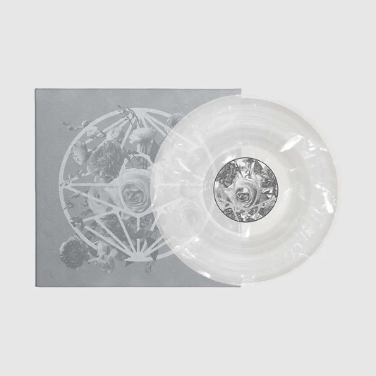
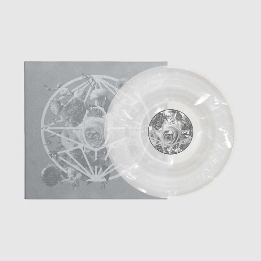

Albums

 


About
Imminence began with a passion for metal music between vocalist and violinist Eddie Berg and guitarist Harald Barrett when they were just teenagers in High School. Back in 2010 our biggest dream was just to play our music live. With countless of hours in the local community rehearsal basement, we took one step at a time, always reaching for new heights. Right from the start we knew that this was what we wanted to do. All our hard-earned money went into taking that next step; recording in a studio; getting new equipment; making music videos; printing CDs. The list goes on.
There was never any doubt or obstacle that would stop us in our tracks. We produced our own music videos, booked our own tours, founded our own company and sacrificed everything to make this work. From the beginning there was an unyielding dedication to write music that was meaningful to us, and when we started to see that people out in the world resonated with our songs and lyrics, this feeling increased tenfold. It wasn't just about us anymore, we had something to say and there was someone listening.
There was never any doubt or obstacle that would stop us in our tracks. We produced our own music videos, booked our own tours, founded our own company and sacrificed everything to make this work. From the beginning there was an unyielding dedication to write music that was meaningful to us, and when we started to see that people out in the world resonated with our songs and lyrics, this feeling increased tenfold. It wasn't just about us anymore, we had something to say and there was someone listening.
It's hard to grasp the impact that Imminence has had on our lives and so many others, but through you we have a better understanding. You give us purpose. You give our music purpose.
When we started our own webstore, we wanted to take full control over the products that we develop as a band. Our love for our craft should translate in every single thing that we do. That's why we only use high quality materials that are environmentally friendly, fair trade and vegan.
Imminence is Eddie Berg (vocals, violin), Harald Barrett and Alex Arnoldsson (guitar), Peter Hanström (drums) and Christian Höijer (bass).